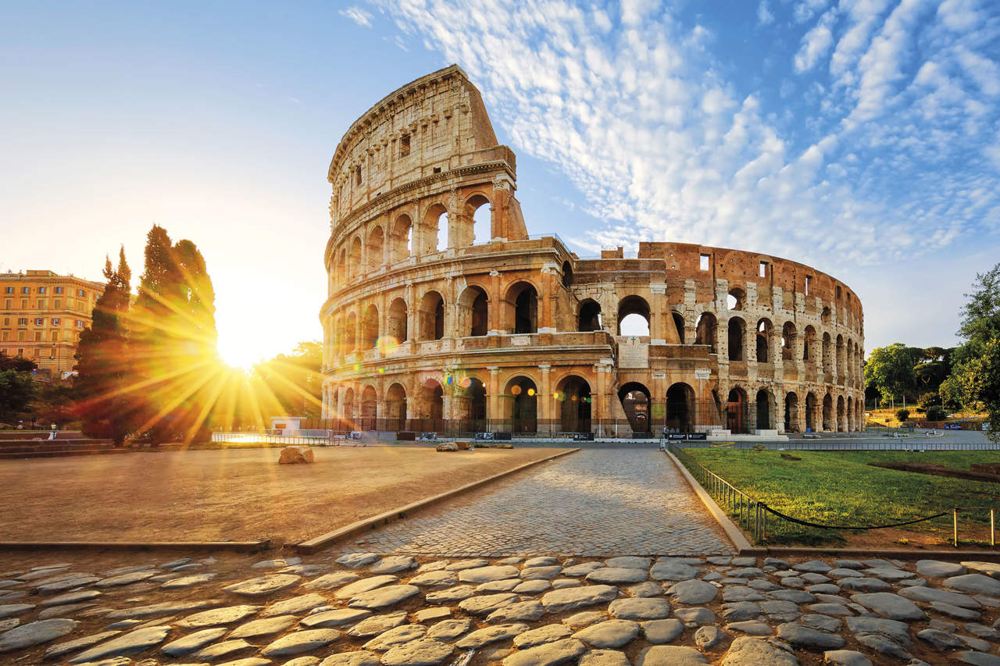

¿Por qué visitar Italia?
Italia es un país que lo tiene todo: historia, cultura, moda, playas, montañas, y una de las cocinas más queridas del mundo. Cada ciudad es una joya por descubrir.


Arte, historia, paisajes y una gastronomía que conquista.
Italia es un país que lo tiene todo: historia, cultura, moda, playas, montañas, y una de las cocinas más queridas del mundo. Cada ciudad es una joya por descubrir.
Viajar en primavera u otoño es ideal para evitar multitudes. Usa trenes para moverte entre ciudades y disfruta de cada región con calma.